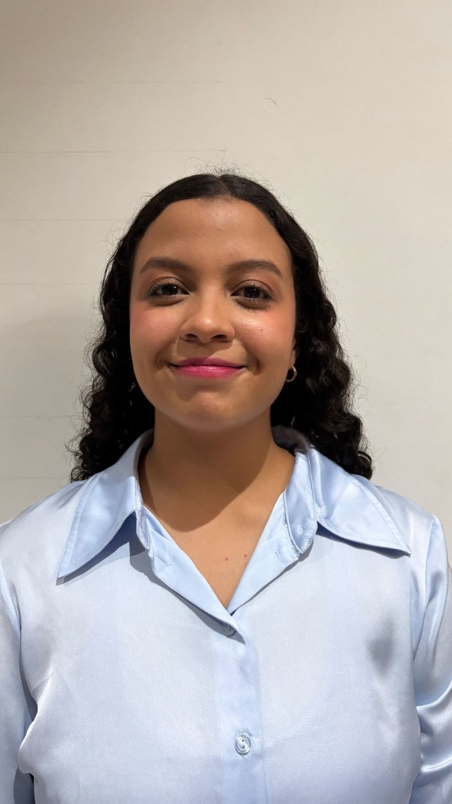

Lorena Melissa Charris Castellón
Ingeniera Industrial en Formación
Tel: +57 3014640456
Ingeniera industrial en formación, con habilidades destacadas en trabajo colaborativo, pensamiento creativo y resolución de problemas.
Experiencia en software especializado como R-Studio, AutoCAD, Excel avanzado, SolidWorks, Java y Python. Conocimiento en diagramas técnicos
bajo normativas ASME y ANSI, y en análisis de datos con Pareto. Miembro activo de IISE desde 2023, con enfoque en calidad y optimización
de procesos. Experiencia en gestión de eventos, cultura universitaria y actividades de voluntariado.
Formación Académica
- Colegio Biffi La Salle – Bachiller con énfasis en matemáticas avanzadas (Nov/2019)
- Universidad del Norte – Ingeniería Industrial (Ene/2020 – Actual)
Formación Complementaria
- Curso general de Propiedad Intelectual, OMPI (Feb – Abr 2024)
- ProducTeam: Producción de eventos, Universidad del Norte (16/08/2024 – 27/11/2024)
Experiencia Universitaria
- Gestora del Stand del libro (Univoluntariados), Univ. del Norte (Feb 2024 – Actual)
Planeación de actividades, gestión de personal y materiales.
- Líder de Staff, 3° Precongreso de Derecho Procesal (Abr – May 2025)
Planeación y ejecución de la logística del evento.
- Promotor de Cultura y Salud, Univ. del Norte (Feb 2024 – Actual)
Organización de eventos para concientización social.
Reconocimientos
- Participación en Geoexpofísica (Oct/2022)
- Staff en “VIII Cátedra Global: First Connections to Sustain Science in Latin America Symposium” (Abr/2024)
- Staff en “Expresarte”, Universidad del Norte (Nov/2024)
Habilidades
- Software: AutoCAD (Intermedio), SolidWorks (Intermedio), R-Studio (Intermedio), Java (Intermedio), Excel avanzado, Python
- Diagramas: ASME, ANSI, Pareto
- Planificación de eventos y gestión del talento humano
- Comunicación asertiva, creatividad, resiliencia
- Trabajo en equipo
Idiomas
- Español (Nativo)
- Inglés (B2)
- Portugués (A1)
Contacto
Email: mlcastellon@uninorte.edu.co
LinkedIn: linkedin.com/in/lorenacharrisingenieraindustrial